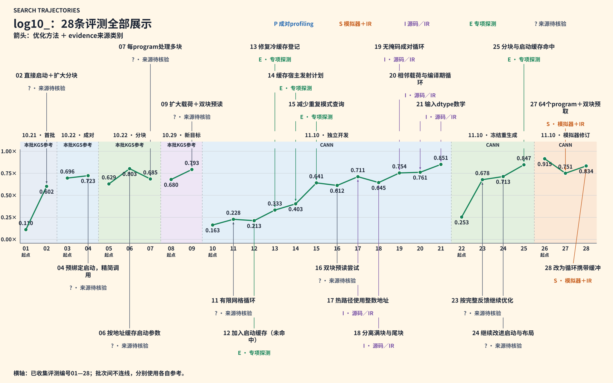

<!doctype html><html lang="zh-CN"><meta charset="utf-8"><title>log10_ · 28节点优化轨迹</title><style>
body{margin:0;background:#fff7e8;font-family:"Microsoft YaHei",sans-serif;color:#1b2434}nav{display:flex;gap:20px;align-items:center;padding:16px 28px;position:sticky;top:0;background:#fff7e8;z-index:2}button,a{font:inherit;font-size:20px}button{padding:8px 20px;background:#fffdf8;border:1px solid #9da5ad;border-radius:10px;cursor:pointer}a{color:#2368b1}main{overflow:auto}img{display:block;width:100%;max-width:none}</style>
<nav><strong>28个节点 · 21个方法／evidence箭头</strong><button onclick="zoom(1)">适应宽度</button><button onclick="zoom(2)">放大2倍</button><a href="log10-all-28.svg" download>SVG</a><a href="log10-all-28.png" download>PNG</a></nav><main></main><script>function zoom(n){document.getElementById('trace').style.width=(100*n)+'%'}</script></html>